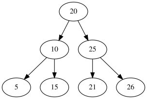
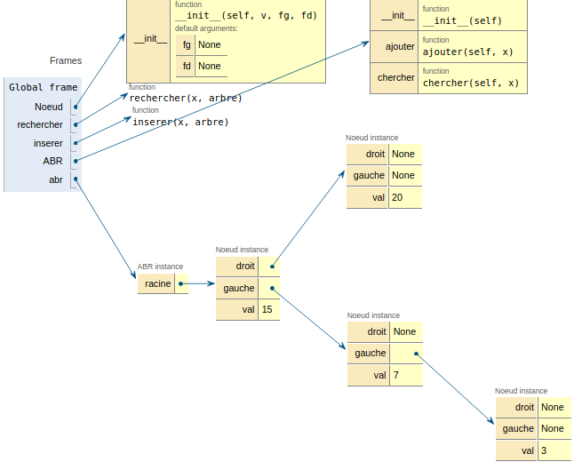

Algorithmes sur les ABR⚓︎
Définition et représentation des arbres binaires de recherche en python⚓︎
Un arbre binaire de recherche (en abrégé ABR) est un arbre binaire dont les noeuds contiennent des valeurs comparables. Pour tout noeud d'un ABR toutes les valeurs situées dans le sous arbre gauche sont inférieures à celle du noeud. De la même façon, toutes les valeurs situées dans le sous arbre droit sont supérieures à celle du noeud.
Exemples d'ABR
 
Un ABR étant un arbre binaire, on peut le représenter comme précédemment avec une classe Noeud avec une contrainte sur la valeur des noeuds: ils doivent être comparables.
Avec la classe Noeud du chapitre précédent, les deux ABR ci-dessus sont modélisés de la façon suivante:
1 2 3 4 5 6 7 | |
1 2 3 4 5 6 7 8 9 | |
Remarque: dans la méthode __init__, fg et fd ont une valeur par défaut égale à None, cela permet juste une écriture plus compacte lors de la création d'une instance en évitant de réécrire None lorsqu'un noeud n'a pas de fils.
Recherche dans un ABR⚓︎
Chercher une valeur dans un ABR revient à la comparer à la valeur de la racine puis, si elle est différente, à poursuivre la recherche dans un seul des sous arbres.
La recherche d'une valeur ou clé \(x\) dans un arbre binaire de recherche arb peut être menée avec l'algorithme ci-dessous qui renvoie le noeud où la valeur est présente ou None si la recherche n'aboutit pas.
1 2 3 4 5 6 7 8 9 10 | |
À faire
Implémenter cet algorithme en python.
1 2 3 4 5 6 7 8 9 10 | |
1 2 3 4 | |
Efficacité de la recherche
Dans le cas idéal, si l'arbre est équilibré, chaque appel de rechercher(x, arbre) élimine la moitié des éléments. Cette recherche est alors à rapprocher de la recherche dichotomique vue en 1re (et dans des exercices d'entrainement EP), dont la complexité est logarithmique.
Dans le pire des cas, si l'arbre est filiforme, la recherche est peu efficace et sa complexité est alors linéaire.
Insertion dans un ABR⚓︎
Comme précédemment, on va privilégier une méthode récursive pour insérer une valeur \(x\) dans un arbre tout en gardant la structure d'arbre binaire de recherche.
Le cas de base est simple: si l'arbre est vide, il suffit de renvoyer un noeud ayant \(x\) comme valeur.
Sinon (cas récursif), on compare \(x\) à la valeur du noeud:
1 2 3 4 | |
Attention à l'interprétation de "placer" x lors de l'implémentation et notamment au type renvoyé.
Implémenter cette fonction en python.
1 2 3 4 5 6 7 8 9 | |
À faire
Vérifier sur pythontutor que les insertions suivantes sont correctes.
1 2 3 4 5 | |
Efficacité de l'insertion
Cette fonction présente une complexité temporelle identique à celle qui effectuait la recherche. Cette complexité va dépendre de la forme de l'arbre.
À faire
Travail à effectuer: comme pour les listes chaînées, compléter la classe ABR dont l'interface propose les méthodes chercher et ajouter.
1 2 3 4 5 6 7 8 9 10 11 | |
1 2 3 4 5 6 7 8 9 10 11 12 13 14 15 16 17 18 19 20 21 22 23 24 25 26 27 28 29 | |
1 2 3 4 5 | |

Parcours d'un ABR⚓︎
1 2 3 4 5 6 7 8 9 10 11 12 13 14 15 16 17 18 19 20 21 22 23 24 25 26 27 28 | |
1 | |